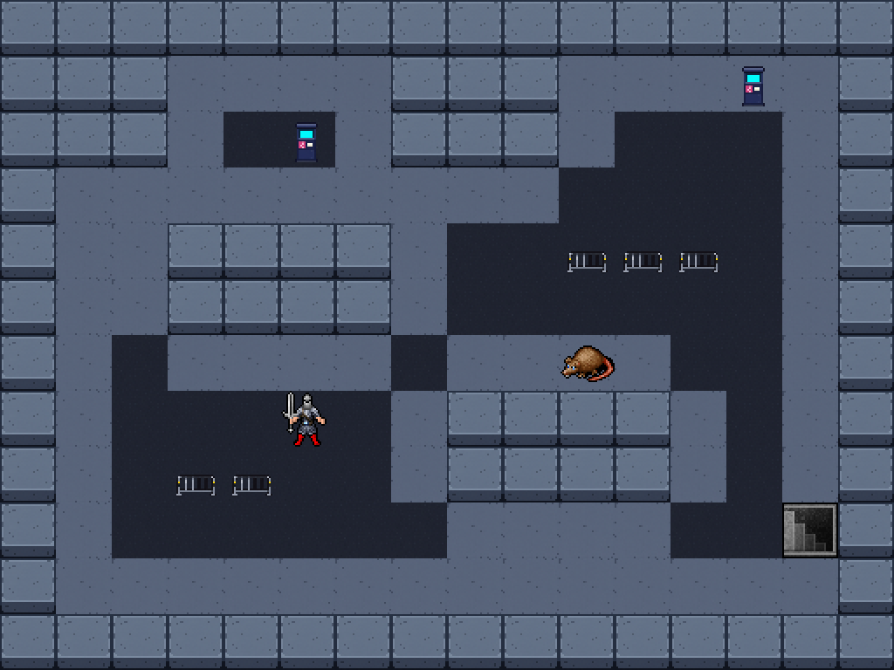

32×32 바닥·벽·소품 도트를 조합한 첫 시안입니다. 기존 돌죽 캐릭터·쥐·계단은 크기 비교용입니다. 일반 실행본이나 절차 생성 던전에 아직 적용하지 않았습니다.

어두운 아스팔트 → 조금 밝은 보도 → 두꺼운 건물 벽. 펜스와 안내기는 공연장 입구 분위기를 담당합니다. 단일 타일의 반복감과 색조를 보는 고정 배치 검사장입니다.
기본 이미지 생성 도구로 만든 원본을 보존하고, 최근접 방식으로32픽셀에 맞췄습니다. 벽 연결부·보도 가장자리·문·다양한 바닥 변형은 다음 작업입니다.
길과 벽이 구분되는지, 캐릭터보다 배경이 튀지 않는지, 펜스·안내기가32픽셀에서 알아보이는지 확인하는 단계입니다. 이동·충돌·시야는 구현되지 않은 미술 시안입니다.